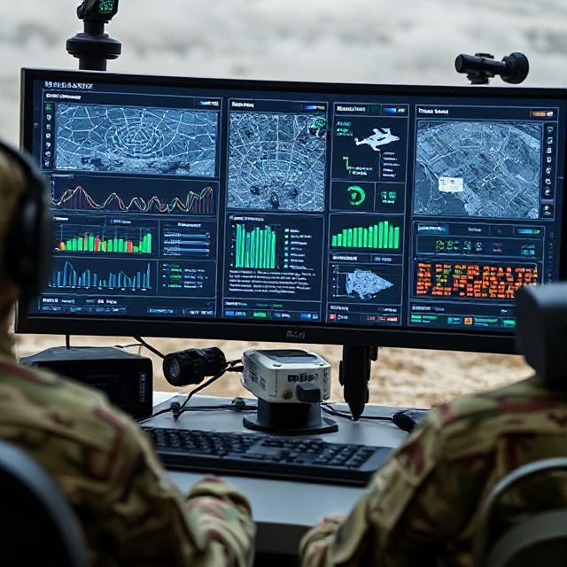
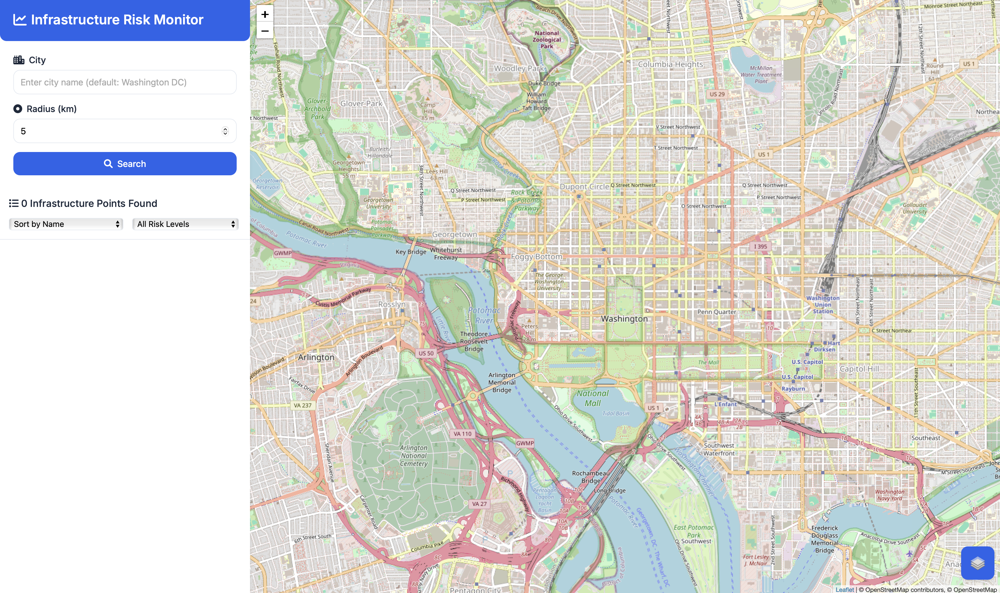

My Projects
Explore my portfolio of AI, ML, and data science projects that demonstrate my technical expertise and problem-solving abilities.
Enterprise Document Intelligence Platform
Built scalable document processing system automating extraction from 2,500+ PDFs using LLM-powered OCR pipelines and cloud infrastructure with real-time API endpoints and automated compliance workflows.
Key Features
- Automated extraction from 2,500+ scanned PDFs and images using AWS Textract and LLM-powered OCR
- Real-time API endpoints for document processing and data retrieval
- Interactive Streamlit dashboards for stakeholder queries and visualization
- Automated compliance workflows and decision-support capabilities
Technical Implementation
The platform uses AWS Textract for OCR, combined with Claude and Llama LLMs for intelligent data extraction. Lambda functions orchestrate the processing pipeline, with S3 for storage and Streamlit for interactive visualization.
Outcomes
Achieved 40% efficiency improvement in regulatory compliance workflows, enabling stakeholders to process thousands of documents with automated insights and reporting.

Multi-Modal Recommendation Engine
Engineered hybrid recommendation system combining structured data analysis with computer vision, reducing user bounce rate by 20% and increasing engagement by 40% through personalized AI-driven recommendations.
Key Features
- Hybrid recommendation combining structured data and visual analysis
- Computer vision for image-based style and aesthetic matching
- A/B testing framework for continuous optimization
- Real-time analytics and user feedback integration
Technical Implementation
Implemented scalable data pipelines processing both structured CSV data and unstructured image data. Used OpenAI API for visual understanding and PostgreSQL for efficient data management.
Outcomes
Reduced user bounce rate by 20% and increased engagement by 40% through personalized recommendations with continuous model improvement.

AI-Powered Medical Diagnosis System
Designed end-to-end ML web application for medical image classification achieving high diagnostic accuracy using deep learning and computer vision techniques with automated feature extraction.
Key Features
- End-to-end ML pipeline for medical image classification
- High diagnostic accuracy with deep learning models
- Interactive web interface using Gradio
- Real-time medical assessment capabilities
Technical Implementation
Built using TensorFlow for deep learning model development, Flask for backend API, and Gradio for interactive user interface. Deployed production-ready inference pipeline with automated reporting.
Outcomes
Enabled real-time medical assessment with high diagnostic accuracy, providing automated reporting capabilities for healthcare applications.

Real-Time Analytics Dashboard
Built interactive ML-powered analytics platform with real-time data ingestion, model inference, and visualization capabilities for performance optimization and predictive insights.
Key Features
- Real-time data ingestion and model inference
- Interactive visualizations with Plotly
- Predictive analytics for performance optimization
- Automated reporting and statistical modeling
Technical Implementation
Developed using Python's Dash framework for interactive dashboards, integrated with machine learning models for real-time predictions and statistical analysis.
Outcomes
Improved performance outcomes by 20% through data-driven insights and predictive analytics with automated reporting.

Gesture-Based Control System
Developed real-time gesture recognition system using computer vision and machine learning for intuitive device control and human-computer interaction with low-latency inference.
Key Features
- Real-time gesture recognition with low-latency inference
- Edge computing deployment on NVIDIA Jetson
- Intuitive device control through gestures
- Optimized model for resource-constrained environments
Technical Implementation
Built using OpenCV for computer vision, deployed on NVIDIA Jetson for edge computing. Implemented efficient ML model optimized for real-time performance on embedded hardware.
Outcomes
Enabled responsive gesture-based control in resource-constrained environments with low-latency inference for human-computer interaction.

Real-Time Infrastructure Risk Assessment for Transportation Networks
A sophisticated web application that assesses and visualizes real-time risks to transportation infrastructure by integrating multiple data sources to provide dynamic risk assessments.
Key Features
- Real-time risk assessment with dynamic scoring based on current conditions
- Interactive map visualization with color-coded risk indicators
- Multi-source data integration (OpenStreetMap, OpenWeatherMap, TomTom Traffic API)
- Advanced filtering and sorting capabilities for infrastructure analysis
- Responsive design for optimal user experience across devices
Technical Implementation
The application uses a Flask backend to integrate data from multiple APIs, calculating risk scores based on traffic congestion, weather conditions, and infrastructure characteristics. The frontend leverages Leaflet for interactive map visualizations, with a PostgreSQL database using PostGIS extension for efficient spatial data management.
Outcomes
Provides transportation authorities with critical real-time insights for infrastructure management, enabling proactive maintenance planning and emergency response prioritization based on current risk levels.
Case Study
- Problem: City planners lacked a unified, real-time view of multi-source risk (traffic, weather, infrastructure attributes).
- Approach: Flask APIs + PostGIS for spatial scoring; Leaflet UI with dynamic risk layers; integrated OpenWeatherMap and TomTom.
- Outcome: Enabled real-time triage and prioritization of network threats; improved response coordination.
- Role: End-to-end engineering (backend, spatial DB, frontend), deployment, and documentation.
Fish Fillet Color Grading System (Published Research)
Production-ready computer vision system achieving 92% accuracy using YOLOv8 and OpenCV, deployed on edge devices for real-time aquaculture quality assessment. Published in Journal of Agriculture and Food Research.
Key Features
- Automated color grading with 92% accuracy on edge devices
- End-to-end ML pipeline from data collection to model serving
- Real-time processing on Raspberry Pi for field deployment
- Custom 3D-printed portable hardware design
Technical Implementation
Developed production-ready system using YOLOv8 classifier and OpenCV deployed on Raspberry Pi 4. Implemented complete ML pipeline including data collection, model training, optimization for edge deployment, and real-time inference.
Outcomes
Achieved 92% accuracy enabling commercial deployment of AI quality control systems. Co-authored peer-reviewed research demonstrating commercial impact of deep learning applications in precision aquaculture.
Publication
Ranjan, R., Shroff, H., et al. (2024). "FilletCam AI: Precision color profiling using deep learning." Journal of Agriculture and Food Research. DOI: 10.1016/j.jafr.2024.101461
WhatsApp Chat Analyzer
A web application designed in Python to analyze and visualize WhatsApp chats using pandas and Streamlit, providing insights into messaging patterns and statistics.
Key Features
- Comprehensive chat statistics and analytics
- Interactive visualizations of messaging patterns
- Sentiment analysis and keyword extraction
- User-friendly Streamlit interface
Technical Implementation
Built using Streamlit for interactive web interface, pandas for data processing, and various NLP techniques for text analysis. Processes exported WhatsApp chat data to generate insights and visualizations.
Dr. Tongue - ML-Based Disease Identifier
A machine learning-based tongue disease identifier using computer vision and deep learning to assist in medical diagnosis through image analysis.
Key Features
- Automated disease identification from tongue images
- Deep learning model for classification
- Medical image preprocessing and analysis
- Educational tool for healthcare applications
Technical Implementation
Implemented using TensorFlow for deep learning model development, with computer vision techniques for image preprocessing and feature extraction. Trained on medical imaging data for disease classification.
Mosquito Identification Using ML on Embedded Systems (Published)
Embedded machine learning system deployed on ARM Cortex-M for real-time mosquito identification with low-latency inference. Published in IEEE ITU Kaleidoscope Conference.
Key Features
- Low-latency inference (<100 ms) on embedded hardware
- High accuracy mosquito species identification
- Optimized model for resource-constrained devices
- Real-time edge computing deployment
Technical Implementation
Developed optimized ML model for deployment on ARM Cortex-M microcontroller. Implemented efficient inference pipeline achieving sub-100ms latency while maintaining high accuracy on embedded hardware.
Publication
Trivedi, K., Shroff, H. (2021). "Mosquito identification using ML on embedded systems." IEEE ITU Kaleidoscope Conference. DOI: 10.23919/ITUK53220.2021.9662116